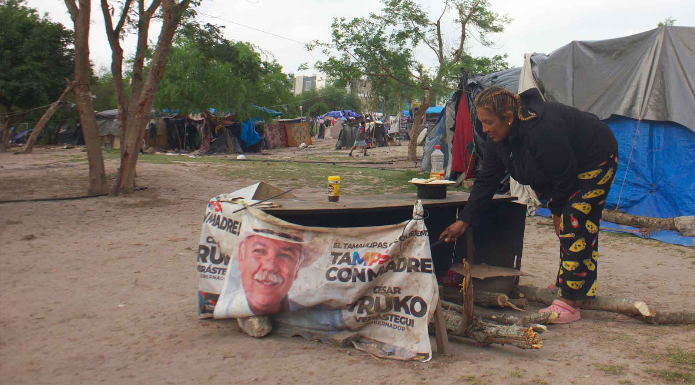
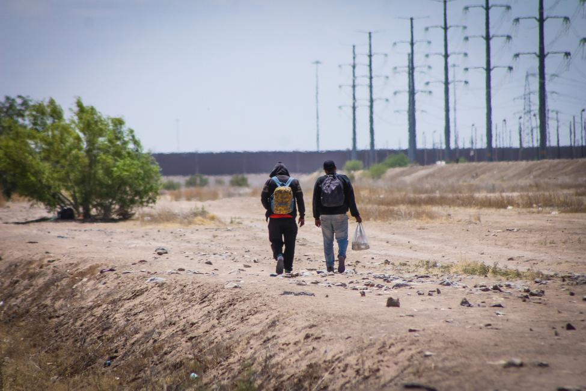
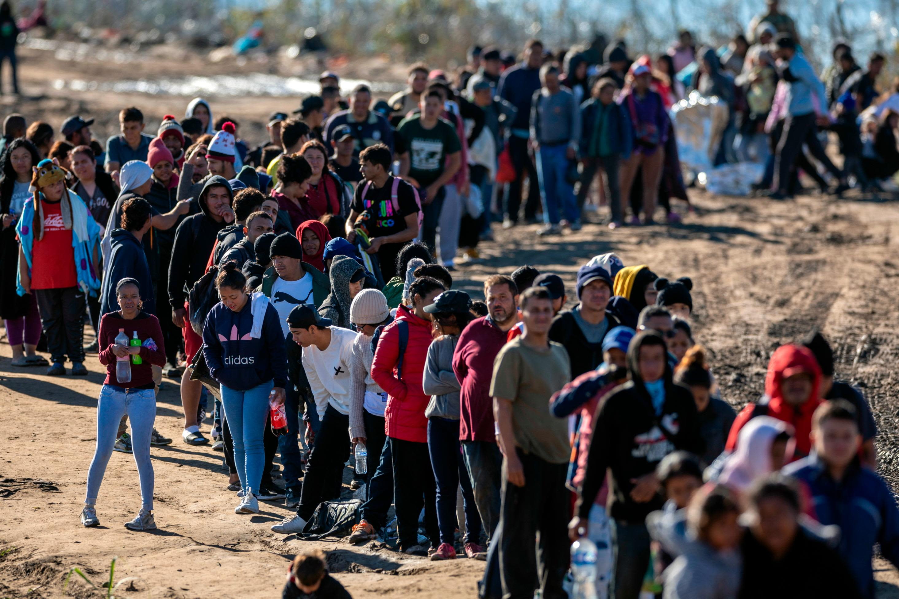
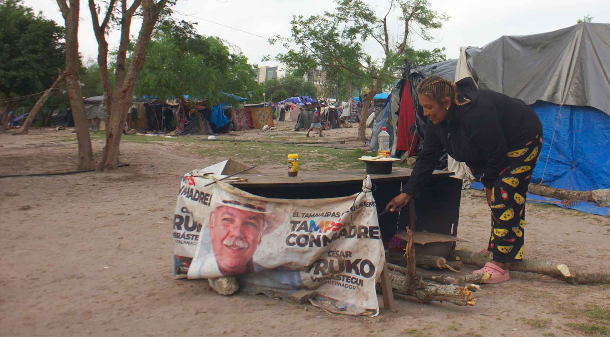
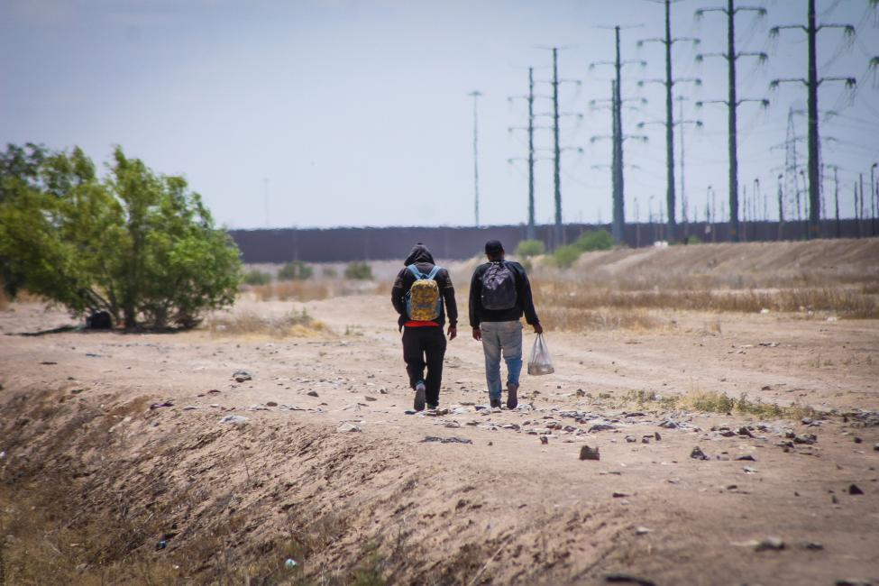
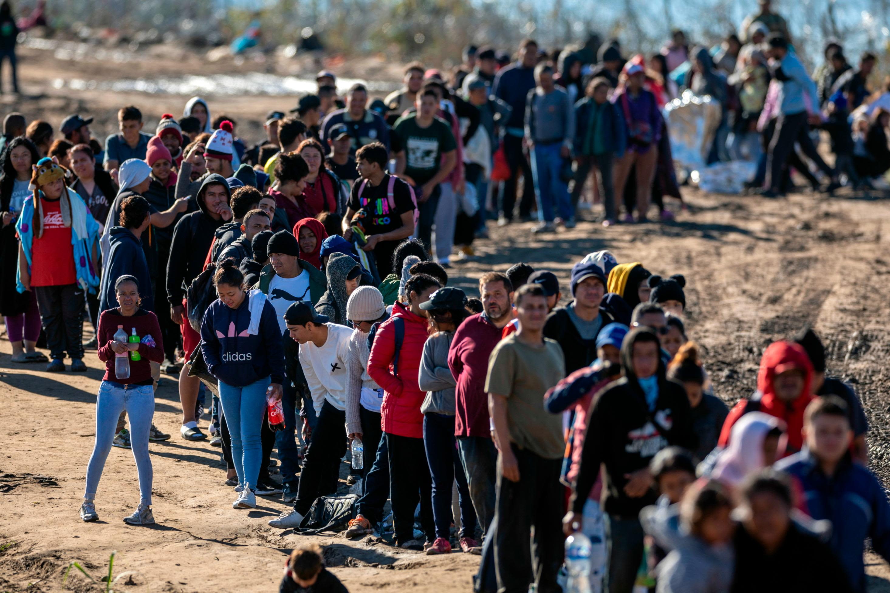

History
For this project, I have chosen to investigate the socio-environmental impacts of the U.S.-Mexico border. The U.S.-Mexico border was first established in 1819 by the Adams–Onís Treaty between the U.S. and Spain. The border was reaffirmed in the 1828 Treaty of Limits after Mexico gained its independence from Spain. The first barrier built by the U.S. was a barbed wire fence to prevent the movement of cattle across the border. It was built in Ambos Nogales between 1909 and 1911 and was expanded in 1929 with a “six–foot–high chain-link fence.”
Social, Economic, and Environmental Impacts
Nowadays, the border is heavily patrolled and the 1,954-mile-long border has some type of barrier along 654 miles. Currently, there are varying sorts of barriers along the border like a picket fence, concrete levee wall with steel bollards, floating fences, steel bollards, vehicle bollards, and “Normandy” barriers. The border is a site that is enveloped with immense political, environmental, and social issues. For example, socially and politically, the topic of immigration is heavily intertwined with the border. Its main job is to limit the movement of bodies. Immigration policy in the U.S. is incredibly strict and it dehumanizes bodies who attempt to enter the U.S. “illegally”. The border also limits the movement of several non-human species, disrupting their migration patterns. The border also cuts through sensitive ecosystems, destroys thousands of acres of habitat, impedes the cross-border migration of dozens of animal species, and causes catastrophic flooding. The border’s effects socially and environmentally are intertwined in several ways, illustrating the border’s history as a product of racism, capitalism, and American imperialism.
Historical Photos of the U.S. - Mexico Border
The United States-Mexico border has a rich and complex history dating back centuries. Established formally by the Treaty of Guadalupe Hidalgo in 1848 after the Mexican-American War, it stretches approximately 1,954 miles from California to Texas. Prior to this, indigenous peoples such as the Apache, Comanche, and Navajo traversed these lands freely. Over time, the border has evolved through diplomatic negotiations, territorial acquisitions, and shifting political landscapes. It has served as a conduit for trade, migration, and cultural exchange, while also witnessing tensions over sovereignty, immigration, and security. From the bustling border towns to the rugged desert terrain, the US-Mexico border remains a symbol of interconnectedness and division, reflecting the complexities of history and geopolitics in North America.
Social and Cultural Impacts of the U.S. - Mexico Border
The U.S.-Mexico border profoundly impacts migrants and immigration policies, particularly those originating from Central America. It stands as a formidable barrier, symbolizing the challenges and risks faced by individuals seeking better opportunities or refuge. Harsh immigration policies often result in the criminalization and dehumanization of migrants, exacerbating their vulnerability to exploitation and abuse. Central American migrants, fleeing poverty, violence, and political instability, often endure perilous journeys marked by exploitation, detention, and family separation. Moreover, the militarization and fortification of the border have pushed migrants into more treacherous routes, increasing their exposure to danger and exploitation by human traffickers and criminal organizations. As a consequence, the border reflects not only the physical barriers but also the systemic injustices embedded within immigration policies, perpetuating cycles of displacement and suffering for those seeking a better life. Furthermore, communities along the border often embody a unique blend of Mexican and American cultures, fostering vibrant expressions of music, art, and cuisine. However, the border also delineates stark disparities in socioeconomic opportunities and access to resources, leading to socio-economic stratification and unequal development.
 





Environmental Impacts of the U.S. - Mexico Border
The Mexico–United States border has a range of environmental issues, such as hazardous waste disposal, increased air pollution, threats to water resources, and ecosystem fragmentation. Despite the La Paz Agreement of 1983, which mandates the return of hazardous waste to the United States, only a fraction of plants along the Texas-Mexico border comply due to physical barriers. Water scarcity is worsening due to climate change, droughts, and population growth, with key aquifers at risk of depletion by 2025. Ecosystem degradation results from agricultural runoff, sewage waste, water withdrawals, military activities, and border enforcement, endangering over 100 species. Barriers like the border wall exacerbate these issues, hindering species movement and leading to further endangerment, as seen with the Mexican gray wolf in 2021.


Videos regarding the Impacts of the U.S. - Mexico Border
This first video is a video that I made which explores this topic.